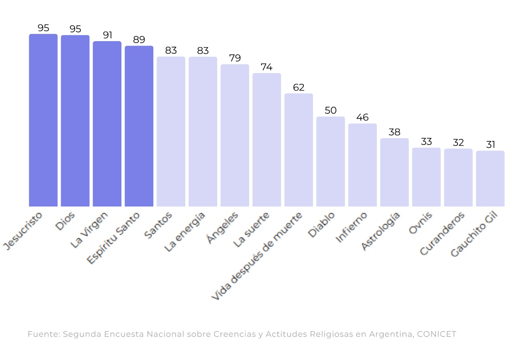
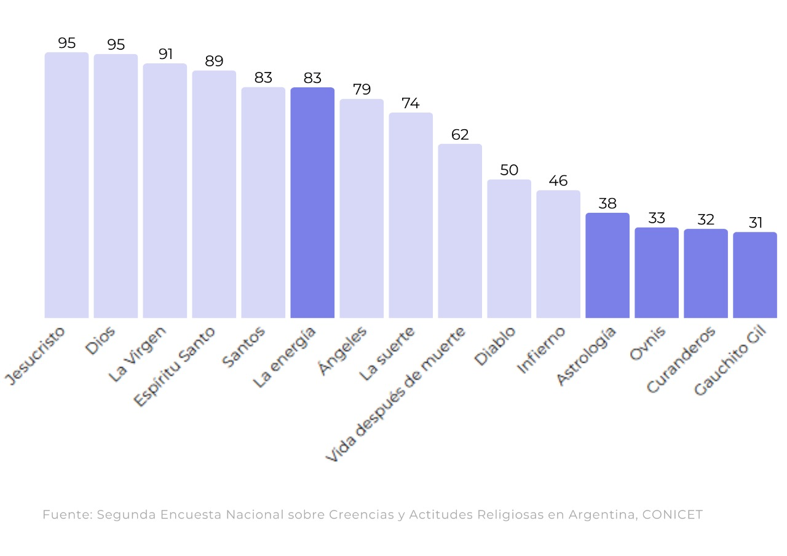
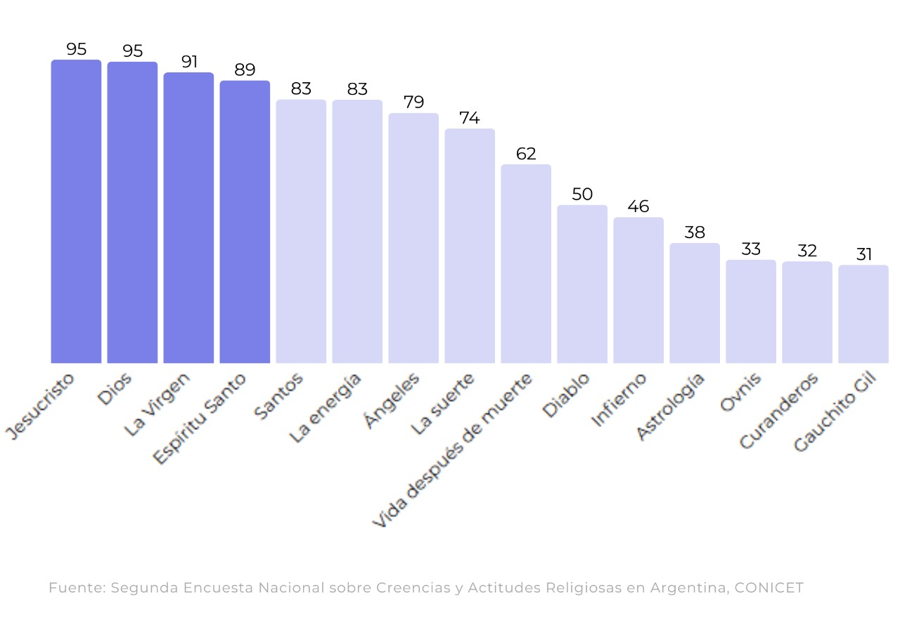
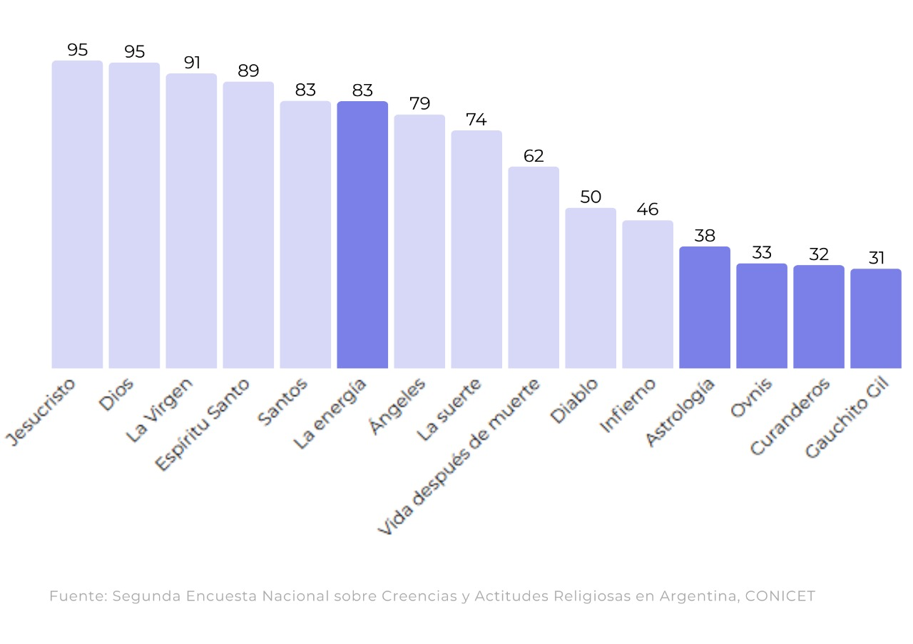
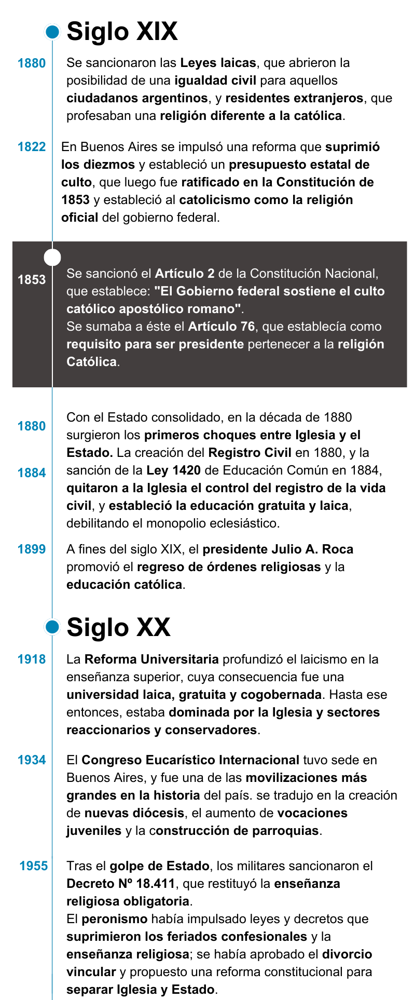
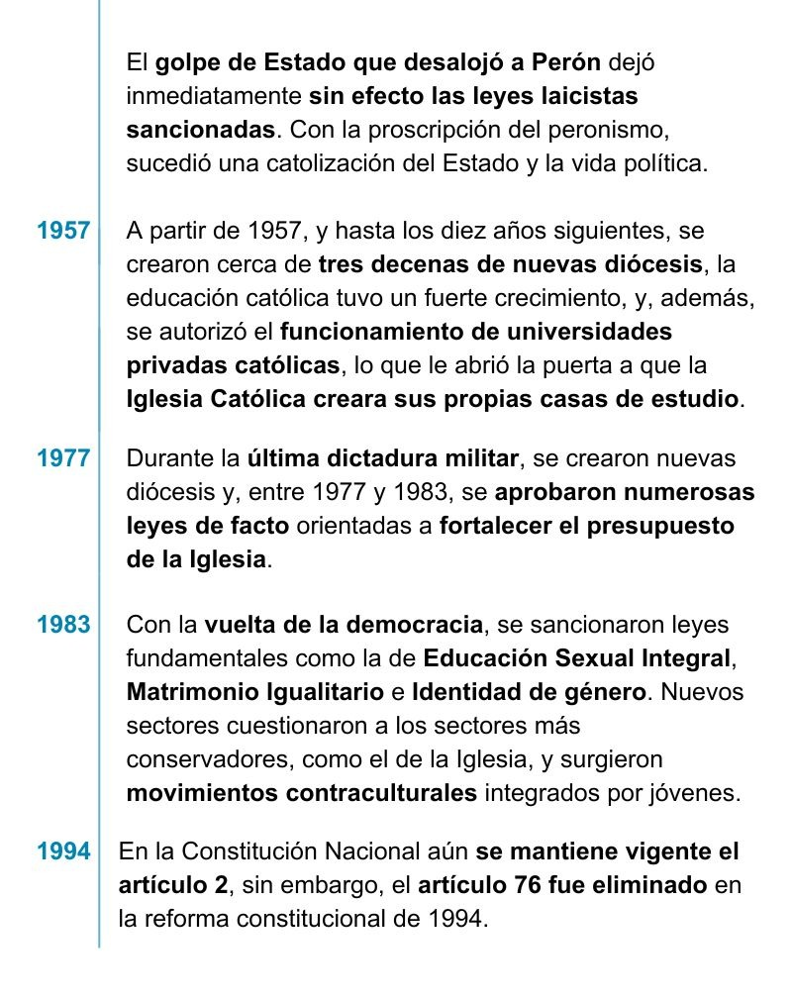
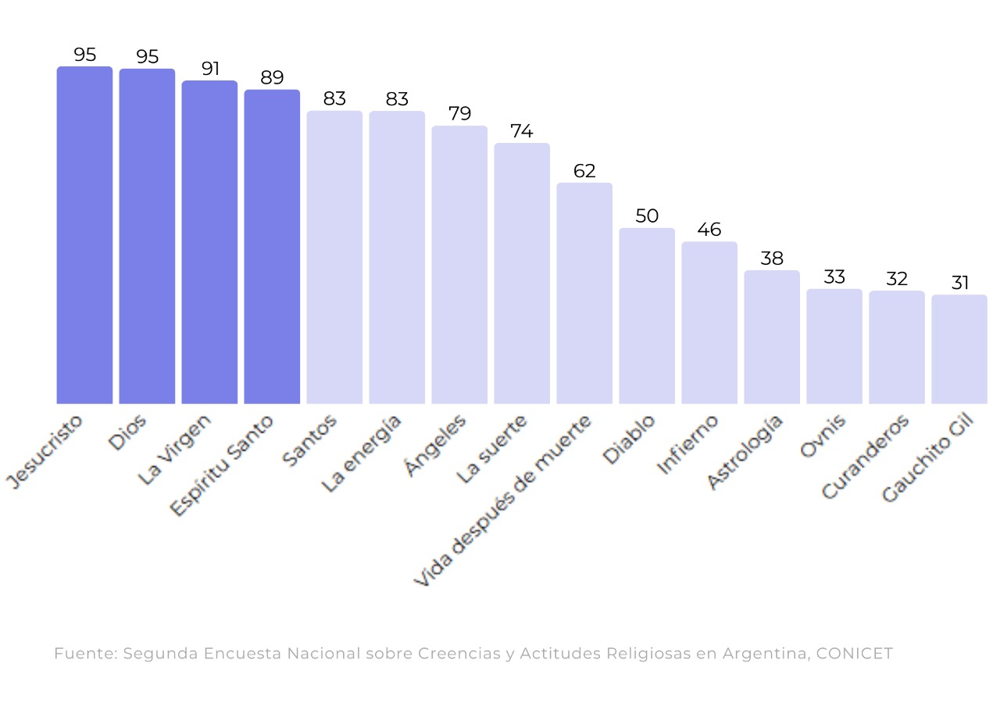
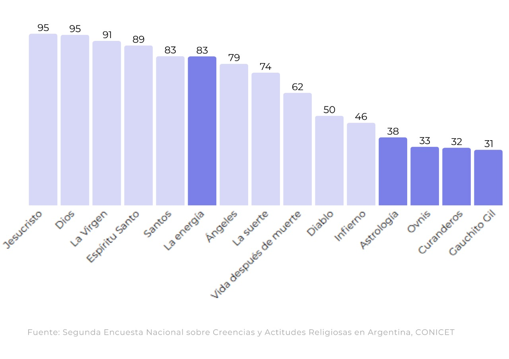

Párrafo introductorio de ejemplo. Párrafo introductorio de ejemplo. Párrafo introductorio de ejemplo. Párrafo introductorio de ejemplo. Párrafo introductorio de ejemplo. Párrafo introductorio de ejemplo. Párrafo introductorio de ejemplo. Párrafo introductorio de ejemplo. Párrafo introductorio de ejemplo.Párrafo introductorio de ejemplo.Párrafo introductorio de ejemplo.Párrafo introductorio de ejemplo.Párrafo introductorio de ejemplo. Párrafo introductorio de ejemplo.Párrafo introductorio de ejemplo.Párrafo introductorio de ejemplo.Párrafo introductorio de ejemplo. Párrafo introductorio de ejemplo.Párrafo introductorio de ejemplo.Párrafo introductorio de ejemplo.Párrafo introductorio de ejemplo. Párrafo introductorio de ejemplo.Párrafo introductorio de ejemplo. Párrafo introductorio de ejemplo.Párrafo introductorio de ejemplo.
termino el parrafo
Texto de ejemplo para la sección 1.
 Texto de ejemplo sección 2.


Texto ejemplo sección final.

Parrafo acompañando imagen ejemplo 3.

Parrafo acompañando imagen ejemplo 4.